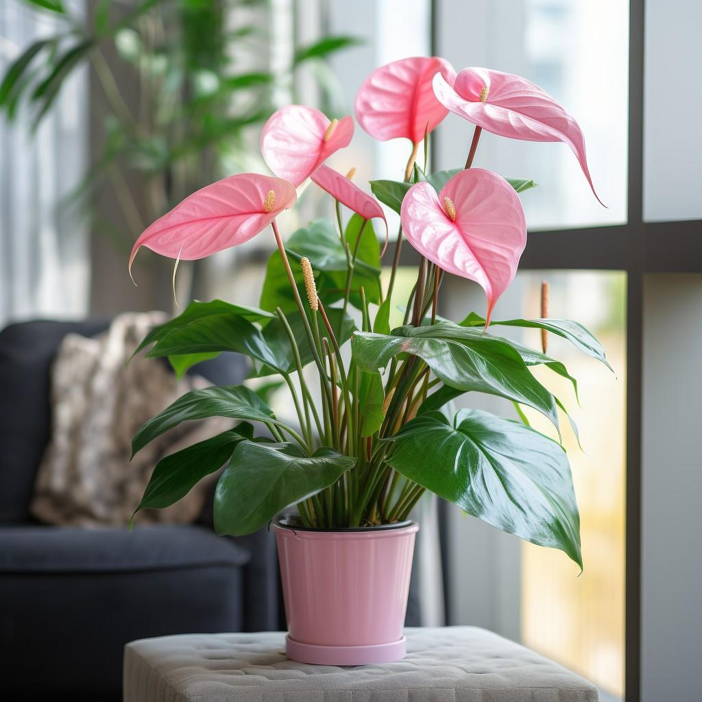

5 Tips for Growing Healthy Indoor Plants
Published on July 14, 2024
Indoor plants are a great way to bring a touch of nature into your home.Here are five tips to help you grow healthy and vibrant indoor plants:
- Choose the Right Plants: Select plants that are suited to the indoor conditions in your home. Consider factors such as light, humidity, and temperature.
- Provide Adequate Light: Ensure your plants recevie the right amount of light. Some plants thrive in bright, indirect light, while others prefer low light conditions.
- Water Properly: Overwatering is a common mistake. Let the soil dry out slightly between waterings, and ensure pots have drainage holes.
- Maintain Humidity: Indoor environments can be dry. Increase humidity by misting your plants, using a humidifier, or placing a water tray nearby.
- Regular Feeding: Fertilize your plants periodically with a balanced, water-souble fertilize to provide essential nutrients.
By following these tips, you can enjoy healthy and beautiful indoor plants that enhance your living space.